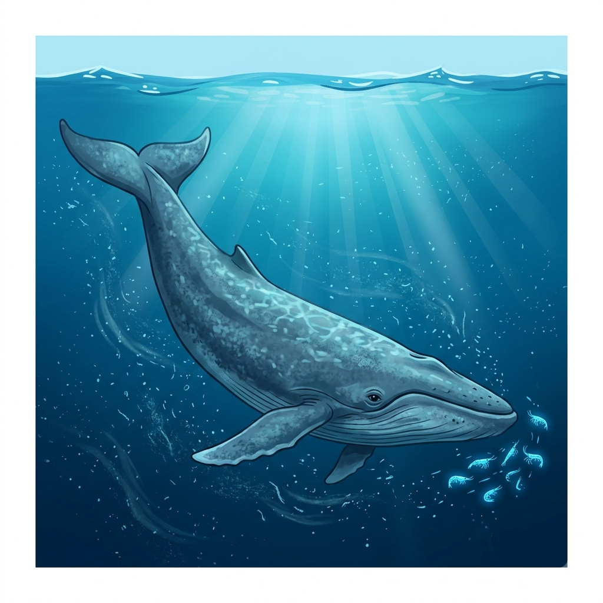
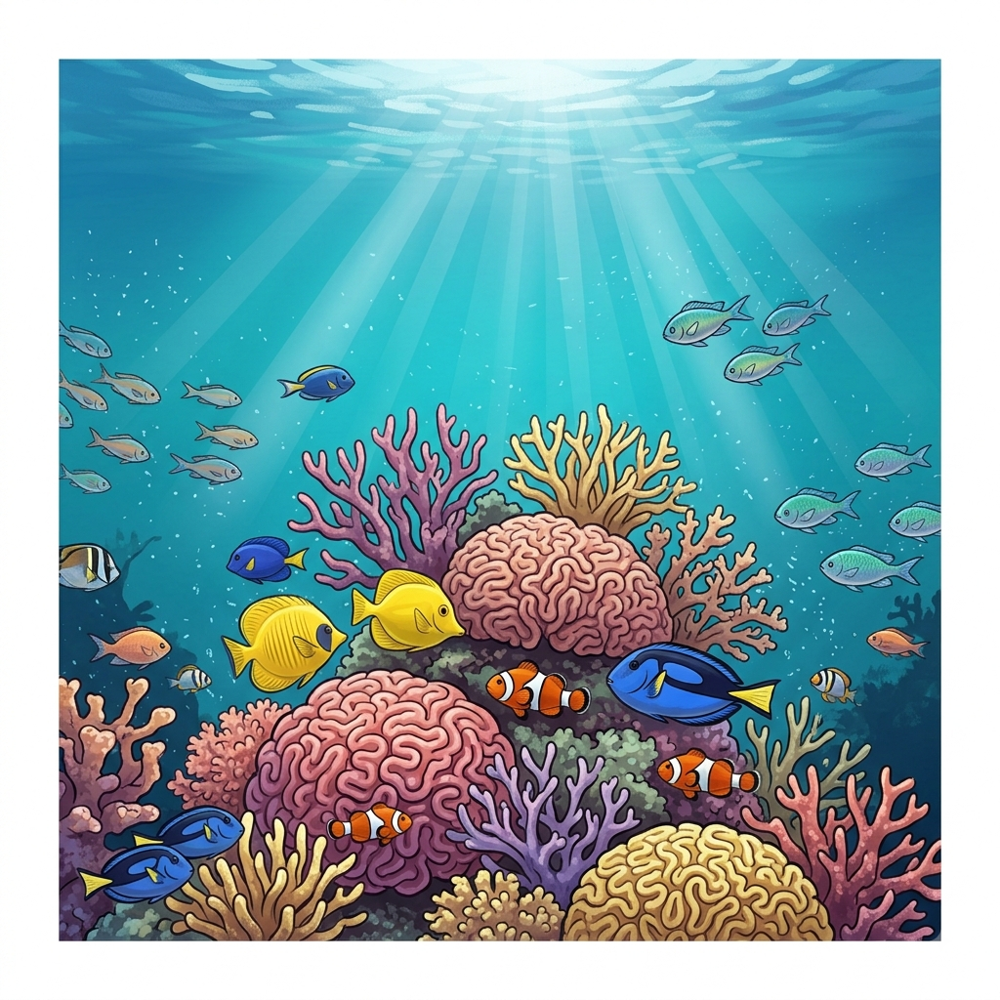
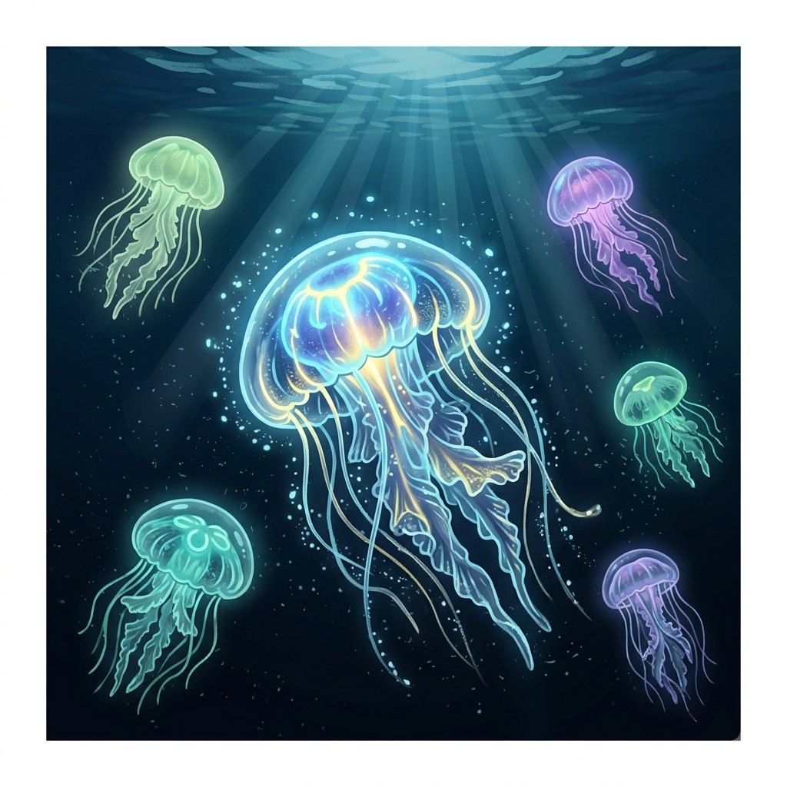
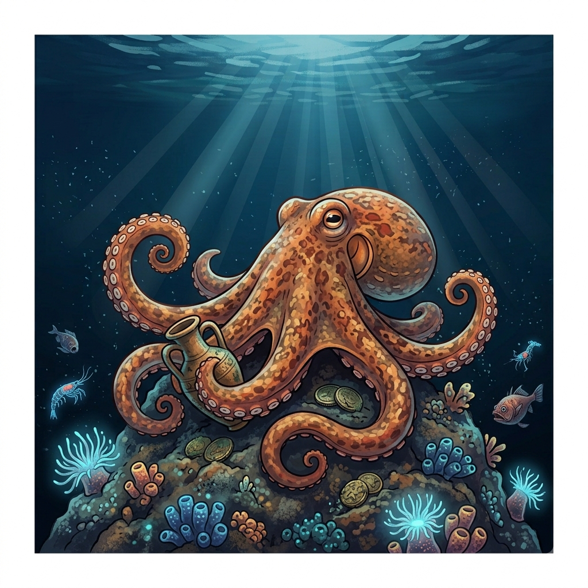

O maior animal que já existiu
Por: Natalia Iurk
A baleia-azul é o maior animal do planeta, podendo ultrapassar 30 metros de comprimento. Seu coração sozinho pode ter o tamanho de um carro pequeno!
Fonte: National Geographic
Curiosidades e maravilhas do mundo marinho por Natalia Iurk

Por: Natalia Iurk
A baleia-azul é o maior animal do planeta, podendo ultrapassar 30 metros de comprimento. Seu coração sozinho pode ter o tamanho de um carro pequeno!
Fonte: National Geographic

Por: Natalia Iurk
Apesar de cobrirem menos de 1% do leito marinho, os recifes de coral abrigam mais de 25% de toda a vida marinha conhecida.
Fonte: WWF

Por: Natalia Iurk
A espécie Turritopsis dohrnii consegue reverter seu ciclo de vida de volta ao estágio de pólipo quando se sente ameaçada, tornando-se biologicamente imortal.
Fonte: BBC Earth

Por: Natalia Iurk
Além de três corações, o sangue dos polvos é azul! Dois corações bombeiam sangue para as guelras, enquanto o terceiro envia para o resto do corpo.
Fonte: Smithsonian Magazine

Por: Natalia Iurk
A Fossa das Marianas possui cerca de 11.000 metros de profundidade. Mesmo com pressão extrema e escuridão total, seres incríveis habitam o local.
Fonte: Oceanographic Institute

Por: Natalia Iurk
Ao contrário do senso comum, mais da metade do oxigênio do planeta é produzido pelos fitoplânctons nos oceanos através da fotossíntese.
Fonte: NOAA